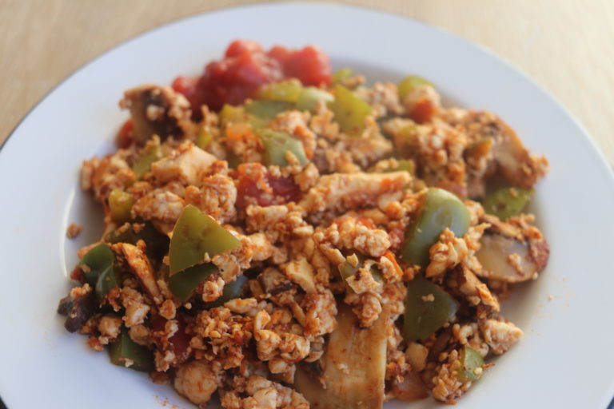

Scrambled Tofu

Ingredients:
- handful chopped mushrooms
- 1/2 bell pepper
- 1/2 block medium-firm tofu
- salt to taste
- salsa
Instructions:
-
Dice the mushrooms and bell peppers into small pieces and fry over medium heat in a non-stick pan with a bit of oil (optional) Sprinkle with salt. Cook until mushrooms are browned (I like to let the mushrooms sit for a bit to brown).
-
Add the medium-firm tofu (crumble it with fingers) and mix with the vegetables. Let it sit for a couple minutes until the tofu browns then mix well with the vegetables.
-
Add as much salsa as you want for flavour, add salt to taste, and you are ready to eat!